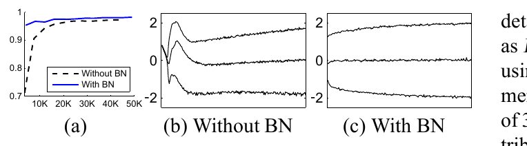
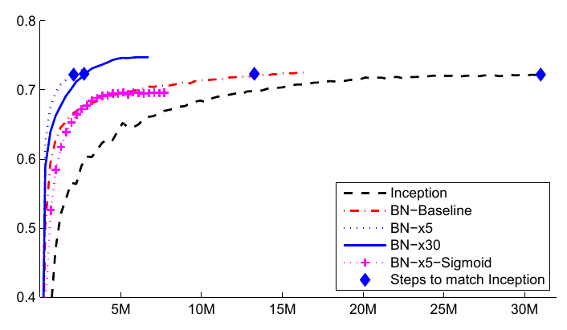

批归一化：通过减少内部协变量偏移来加速深度网络训练Batch Normalization: Accelerating Deep Network Training by Reducing Internal Covariate Shift
深度神经网络的训练之所以复杂，是因为每一层输入的分布在训练过程中会不断变化：前一层参数一变，后一层的输入分布就跟着变。这迫使训练不得不使用更低的学习率、更小心的参数初始化，也让带饱和非线性的模型变得出了名地难训。我们把这一现象称为内部协变量偏移，并通过归一化层输入来解决它。我们的方法之所以有力，是因为把归一化做成了模型结构的一部分，并且对每个训练小批量都执行归一化。批归一化让我们可以使用高得多的学习率，也不必那么小心地初始化。它还起到正则化的作用，某些情况下甚至可以省掉 Dropout。把它用在当时最好的图像分类模型上，批归一化只用 1/14 的训练步数就达到相同精度，并显著超过原模型。用一组批归一化网络做集成，我们刷新了 ImageNet 分类的最好公开结果：top-5 验证误差 4.9%（测试误差 4.8%），超过了人类标注者的准确率。
1 引言
深度学习已经在视觉、语音以及许多其他领域大幅推进了最好水平。随机梯度下降（SGD）被证明是训练深度网络的有效方式，而 momentum（Sutskever 等, 2013）、Adagrad（Duchi 等, 2011）等 SGD 变体则被用来取得当时最好的性能。SGD 优化网络的参数 Θ，以最小化损失
其中 x1…N 是训练数据集。用 SGD 训练是一步一步进行的，每一步考虑一个大小为 m 的小批量（mini-batch）x1…m。小批量被用来近似损失函数关于参数的梯度，即计算
与一次只用一个样本相比，使用小批量样本在好几方面都有帮助。第一，一个小批量上的损失梯度是训练集上梯度的估计，批量越大，估计质量越好。第二，由于现代计算平台提供的并行性，对一批数据做计算可以比逐样本做 m 次计算高效得多。
虽然随机梯度简单有效，但它需要仔细地调节模型超参数，尤其是优化所用的学习率，以及模型参数的初始值。训练之所以复杂，是因为每一层的输入都受到前面所有层参数的影响——于是网络越深，参数上的微小变化就会被放得越大。
各层输入分布的变化之所以是个问题，是因为各层必须不断去适应新的分布。当一个学习系统的输入分布发生变化时，我们说它经历了协变量偏移（Shimodaira, 2000）。这通常通过领域自适应来处理（Jiang, 2008）。不过，协变量偏移这一概念可以超出「整个学习系统」的范围，用到它的各个组成部分上，例如一个子网络或一层。考虑计算
的网络，其中 F1 和 F2 是任意变换，参数 Θ1、Θ2 需要被学习以最小化损失 ℓ。学习 Θ2 可以看作是把输入 x = F1(u, Θ1) 喂给子网络
例如，一步梯度下降
（批量大小 m、学习率 α）与一个以 x 为输入的独立网络 F2 的更新完全等价。因此，那些让训练更高效的输入分布性质——例如训练数据与测试数据同分布——同样适用于子网络的训练。所以，让 x 的分布随时间保持不变是有利的。这样，Θ2 就不必为了补偿 x 分布的变化而反复重新调整。
子网络输入的固定分布，对子网络之外的层也会带来好处。考虑一个带 sigmoid 激活的层 z = g(Wu + b)，其中 u 是层输入，权重矩阵 W 与偏置向量 b 是该层待学习的参数，g(x) = 1/(1 + exp(−x))。当 x 增大时，g′(x) 趋于 0。这意味着，对 x = Wu + b 的所有维度而言，除了那些绝对值很小的维度，回传到 u 的梯度都会消失，模型也就训练得很慢。然而 x 受 W、b 以及下面所有层参数的影响，训练中这些参数一变，很可能把 x 的许多维度推进非线性的饱和区，拖慢收敛。网络越深，这种效应被放得越大。实践中，饱和问题与由此产生的梯度消失通常靠以下手段缓解：使用修正线性单元（Nair & Hinton, 2010）ReLU(x) = max(x, 0)、精心设计的初始化（Bengio & Glorot, 2010; Saxe 等, 2013）以及较小的学习率。但是，如果我们能保证非线性层输入的分布在训练中更稳定，那么优化器就不太会卡在饱和区，训练就会加速。
我们把训练过程中深度网络内部节点分布的变化称为内部协变量偏移（Internal Covariate Shift）。消除它有望带来更快的训练。我们提出一种新机制，称之为批归一化（Batch Normalization）：它朝着减少内部协变量偏移迈出一步，并由此大幅加速深度网络的训练。它通过一个归一化步骤来实现，即固定层输入的均值与方差。批归一化对网络中的梯度流动也有好处，它降低了梯度对参数尺度或参数初值的依赖。这让我们可以使用高得多的学习率而不担心发散。此外，批归一化使模型正则化，减少了对 Dropout 的需要（Srivastava 等, 2014）。最后，批归一化让使用饱和非线性成为可能，因为它阻止网络卡在饱和模式中。
在第 4.2 节，我们把批归一化应用到当时性能最好的 ImageNet 分类网络上，结果表明我们只用 7% 的训练步数就能达到它的性能，并且能进一步以明显幅度超过它的精度。用一组这样训练出的批归一化网络做集成，我们取得的 top-5 误差率刷新了 ImageNet 分类的已知最好结果。
2 减少内部协变量偏移
我们把内部协变量偏移定义为：训练过程中网络参数变化所导致的网络激活值分布的变化。为了改善训练，我们力求减少内部协变量偏移。如果在训练推进过程中固定层输入 x 的分布，我们期望训练速度得到改善。人们很早就知道（LeCun 等, 1998b; Wiesler & Ney, 2011）：如果网络的输入被白化——即线性变换到零均值、单位方差并去相关——训练收敛得更快。由于每一层看到的是下面各层产出的输入，那么对每一层的输入也做同样的白化将是有利的。通过对每一层的输入做白化，我们就朝「输入分布固定」迈出了一步，从而消除内部协变量偏移的坏影响。
我们可以考虑在每一个训练步、或者每隔一段时间对激活值做白化，方式可以是直接修改网络，也可以是让优化算法的参数依赖于网络激活值（Wiesler 等, 2014; Raiko 等, 2012; Povey 等, 2014; Desjardins & Kavukcuoglu）。但是，如果这些修改与优化步骤交替进行，那么梯度下降步就可能试图以「需要同步更新归一化」的方式更新参数，从而削弱梯度步的效果。举个例子，考虑一个输入为 u、加上学到的偏置 b、再用训练数据上算出的激活均值做减均值归一化的层：x̂ = x − E[x]，其中 x = u + b，𝒳 = {x1…N} 是 x 在训练集上的取值集合，E[x] = (1/N) ΣNi=1 xi。如果梯度下降步忽略了 E[x] 对 b 的依赖，它就会把 b 更新为 b + Δb，其中 Δb ∝ −∂ℓ/∂x̂。于是 u + (b + Δb) − E[u + (b + Δb)] = u + b − E[u + b]。也就是说，对 b 的更新与随后归一化的改变合起来，既没有改变该层的输出，也就没有改变损失。随着训练继续，b 会无限增长，而损失保持不变。如果归一化不仅做中心化、还做缩放，这个问题会更严重。我们在最初的实验中经验性地观察到了这一点：当归一化参数在梯度下降步之外计算时，模型会爆掉。
上述做法的问题在于：梯度下降优化没有把「归一化会发生」这件事考虑进去。为解决这个问题，我们希望保证：对任意参数值，网络总是产生具有期望分布的激活值。这样，损失关于模型参数的梯度就能把归一化及其对模型参数 Θ 的依赖一并考虑进来。再次设 x 为某一层的输入（视为向量），𝒳 为该输入在训练数据集上的取值集合。那么归一化可以写成一个变换
它不仅依赖于给定的训练样本 x，还依赖于所有样本 𝒳——如果 x 是另一层生成的，那么每个样本都依赖 Θ。做反向传播时，我们需要计算雅可比矩阵
忽略后一项就会导致前面描述的爆炸。在这个框架下，对层输入做白化代价很高，因为它需要计算协方差矩阵 Cov[x] = Ex∈𝒳[xxT] − E[x]E[x]T 及其逆平方根，以得到白化后的激活值 Cov[x]−1/2(x − E[x])，还要为反向传播计算这些变换的导数。这促使我们去寻找另一种做法：它做输入归一化的方式是可微的，而且不需要在每次参数更新后都分析整个训练集。
此前的一些方法（例如 Lyu & Simoncelli, 2008）使用单个训练样本上的统计量，或者在图像网络的情形下，使用给定位置上不同特征图之间的统计量。然而这会丢掉激活值的绝对尺度，从而改变网络的表达能力。我们希望保留网络中的信息：用整个训练数据的统计量作为参照，来归一化某个训练样本中的激活值。
3 通过小批量统计量做归一化
由于对每层输入做完全白化代价高昂且并非处处可微，我们做两个必要的简化。第一，我们不再联合白化层输入与输出的特征，而是独立地归一化每一个标量特征，使它具有零均值和单位方差。对于 d 维输入 x = (x(1) … x(d)) 的层，我们归一化每一维
其中期望与方差都在训练数据集上计算。正如（LeCun 等, 1998b）所示，即使特征之间没有去相关，这样的归一化也能加速收敛。
请注意，仅仅归一化某一层的每个输入可能会改变这一层能表示的东西。例如，把 sigmoid 的输入归一化，就会把它们约束到非线性的线性区。为解决这一点，我们要确保插入网络的变换能够表示恒等变换。为此，我们为每个激活值 x(k) 引入一对参数 γ(k)、β(k)，对归一化后的值做缩放与平移：
这些参数与原始模型参数一起学习，恢复了网络的表达能力。事实上，只要令 γ(k) = √(Var[x(k)]) 与 β(k) = E[x(k)]，如果那样做是最优的，我们就能还原出原来的激活值。
在每步训练都基于整个训练集的批量设置中，我们会用整个集合来归一化激活值。然而在使用随机优化时这不现实。因此我们做第二个简化：由于随机梯度训练使用小批量，每个小批量会给出每个激活值均值与方差的估计。这样一来，用于归一化的统计量就能充分参与梯度的反向传播。注意，使用小批量之所以可行，是因为我们计算的是逐维方差而不是联合协方差；在联合的情形下就需要正则化，因为小批量大小很可能小于被白化的激活值个数，导致协方差矩阵奇异。
考虑一个大小为 m 的小批量。由于归一化独立地施加于每个激活值，我们聚焦于某个特定的激活值 x(k) 并为了清晰省去 k。这个小批量中该激活值有 m 个取值，
设归一化后的值为 x̂1…m，它们的线性变换为 y1…m。我们把变换
称为批归一化变换（Batch Normalizing Transform）。算法 1 给出了 BN 变换。算法中，ϵ 是加到小批量方差上的常数，用于数值稳定性。
- μℬ ← (1/m) Σmi=1 xi // 小批量均值
- σℬ2 ← (1/m) Σmi=1 (xi − μℬ)2 // 小批量方差
- x̂i ← (xi − μℬ) / √(σℬ2 + ϵ) // 归一化
- yi ← γ x̂i + β ≡ BNγ,β(xi) // 缩放与平移
BN 变换可以加入到网络中，用来操纵任意激活值。在记号 y = BNγ,β(x) 中，我们表示参数 γ 与 β 是要学习的；但要注意，BN 变换并不是独立地处理每个训练样本中的激活值。相反，BNγ,β(x) 既依赖于该训练样本，也依赖于小批量中的其他样本。缩放平移后的值 y 被传给网络的其他层。归一化后的激活值 x̂ 是我们变换内部的量，但它们的存在至关重要。只要每个小批量的元素都是从同一分布中采样的，并且我们忽略 ϵ，那么任意 x 的取值分布就有期望 0 与方差 1。这可以通过观察 Σmi=1 x̂i = 0 与 (1/m) Σmi=1 x̂i2 = 1，再取期望得到。每个归一化后的激活值 x̂(k) 都可以看作某个子网络的输入，该子网络由线性变换 y(k) = γ(k)x̂(k) + β(k) 以及原网络后续的处理构成。这些子网络输入都具有固定的均值与方差；虽然这些归一化后的 x̂(k) 的联合分布会在训练过程中变化，但我们预期引入归一化输入会加速该子网络、从而加速整个网络的训练。
训练时我们需要让损失 ℓ 的梯度通过这个变换反向传播，同时计算关于 BN 变换参数的梯度。我们按如下方式使用链式法则（尚未化简）：
∂ℓ/∂σℬ2 = mΣi = 1 (∂ℓ/∂x̂i) · (xi − μℬ) · (−1/2)(σℬ2 + ϵ)−3/2
∂ℓ/∂μℬ = ( mΣi = 1 (∂ℓ/∂x̂i) · (−1/√(σℬ2 + ϵ)) ) + (∂ℓ/∂σℬ2) · ( Σmi=1 −2(xi − μℬ) / m )
∂ℓ/∂xi = (∂ℓ/∂x̂i) · (1/√(σℬ2 + ϵ)) + (∂ℓ/∂σℬ2) · (2(xi − μℬ)/m) + (∂ℓ/∂μℬ) · (1/m)
∂ℓ/∂γ = mΣi = 1 (∂ℓ/∂yi) · x̂i
∂ℓ/∂β = mΣi = 1 ∂ℓ/∂yi
因此，BN 变换是一个可微的变换，它把归一化后的激活值引入网络。这保证了在模型训练时，各层能够继续在内部协变量偏移更小的输入分布上学习，从而加速训练。此外，施加在这些归一化激活值上的可学习仿射变换，使 BN 变换能够表示恒等变换，从而保留网络容量。
3.1 批归一化网络的训练与推理
要对一个网络做批归一化，我们先指定一个激活值子集，再按算法 1 为其中每个激活值插入 BN 变换。任何原先以 x 为输入的层，现在都以 BN(x) 为输入。使用批归一化的模型可以用批量梯度下降来训练，也可以用小批量大小 m > 1 的随机梯度下降、或它的任何变体（例如 Adagrad（Duchi 等, 2011））来训练。依赖小批量的激活值归一化让训练变得高效，但在推理时既不需要、也不希望这样做；我们希望输出只确定性地依赖于输入。为此，网络训练好之后，我们使用总体统计量（而不是小批量统计量）做归一化
忽略 ϵ 后，这些归一化激活值与训练时一样具有均值 0、方差 1。我们使用无偏方差估计 Var[x] = m/(m−1) · Eℬ[σℬ2]，其中期望是对大小为 m 的训练小批量取的，σℬ2 是它们的样本方差。也可以改用滑动平均，这样我们就能跟踪模型在训练过程中的准确率。由于推理时均值与方差是固定的，归一化就是施加于每个激活值的一个简单线性变换。它还可以与 γ 的缩放、β 的平移合在一起，化为一个单一的线性变换来替代 BN(x)。算法 2 总结了训练批归一化网络的过程。
- NtrBN ← N // 训练 BN 网络
- 对 k = 1 … K 循环
- 把变换 y(k) = BNγ(k), β(k)(x(k)) 加入 NtrBN（算法 1）
- 把 NtrBN 中以 x(k) 为输入的层改为以 y(k) 为输入
- 结束循环
- 训练 NtrBN，优化参数 Θ ∪ {γ(k), β(k)}Kk=1
- NinfBN ← NtrBN // 冻结参数，得到推理用的 BN 网络
- 对 k = 1 … K 循环
- // 为清晰起见记 x ≡ x(k)、γ ≡ γ(k)、μℬ ≡ μℬ(k) 等
- 处理多个大小为 m 的训练小批量 ℬ，并对它们取平均：E[x] ← Eℬ[μℬ]；Var[x] ← m/(m−1) · Eℬ[σℬ2]
- 在 NinfBN 中，把变换 y = BNγ,β(x) 替换为 y = ( γ / √(Var[x] + ϵ) ) · x + ( β − γ E[x] / √(Var[x] + ϵ) )
- 结束循环
3.2 批归一化的卷积网络
批归一化可以施加于网络中任意一组激活值。这里我们聚焦于「仿射变换后接逐元素非线性」这一组合：
其中 W 与 b 是模型待学习的参数，g(·) 是 sigmoid 或 ReLU 之类的非线性。这一形式同时涵盖全连接层与卷积层。我们紧跟非线性之前加入 BN 变换，也就是对 x = Wu + b 做归一化。我们本来也可以归一化层的输入 u，但 u 很可能是另一个非线性的输出，其分布形状在训练中很可能变化，仅仅约束它的一阶与二阶矩并不能消除协变量偏移。相比之下，Wu + b 更可能具有对称、非稀疏、「更接近高斯」的分布（Hyvärinen & Oja, 2000）；对它做归一化更可能产生分布稳定的激活值。
注意，由于我们归一化的是 Wu + b，偏置 b 可以忽略，因为它的作用会被随后的减均值抵消（偏置的角色由算法 1 中的 β 承担）。于是，z = g(Wu + b) 被替换为
其中 BN 变换独立地施加于 x = Wu 的每一维，每一维有各自的一对可学习参数 γ(k)、β(k)。
对于卷积层，我们还希望归一化遵守卷积的性质——即同一特征图在不同位置上的不同元素，应以同样的方式被归一化。为此，我们对一个小批量内、所有位置上的全部激活值做联合归一化。在算法 1 中，我们令 ℬ 为一个特征图上、跨小批量各元素与各空间位置的全部取值集合——于是对于大小为 m 的小批量和 p × q 大小的特征图，我们使用有效小批量大小 m′ = |ℬ| = m · pq。我们为每个特征图（而不是每个激活值）学习一对参数 γ(k) 与 β(k)。算法 2 也做相应修改，使得推理时 BN 变换对给定特征图中的每个激活值施加同一个线性变换。
3.3 批归一化让更高的学习率成为可能
在传统的深度网络中，学习率太高可能导致梯度爆炸或消失，也可能卡在糟糕的局部极小值。批归一化有助于解决这些问题。通过归一化整个网络中的激活值，它防止参数的微小变化在梯度中被放大成更大、次优的激活值变化；例如，它阻止训练卡在非线性的饱和区。
批归一化还让训练对参数尺度更有韧性。通常，大学习率会增大层参数的尺度，后者在反向传播中又会放大梯度，导致模型爆炸。然而有了批归一化，通过某一层的反向传播不受其参数尺度的影响。事实上，对标量 a，
并且可以证明
∂BN((aW)u) / ∂(aW) = (1/a) · ∂BN(Wu) / ∂W
尺度既不影响该层的雅可比矩阵，也就不影响梯度的传播。而且，更大的权重会带来更小的梯度，批归一化会稳定参数的增长。
我们进一步猜测，批归一化可能使各层的雅可比矩阵奇异值接近 1，而这一点已知对训练有益（Saxe 等, 2013）。考虑两个相邻的、输入都经过归一化的层，以及这两个归一化向量之间的变换：ẑ = F(x̂)。假设 x̂ 与 ẑ 都是高斯且不相关，并且对于给定的模型参数，F(x̂) ≈ Jx̂ 是线性变换，那么 x̂ 和 ẑ 都具有单位协方差，且 I = Cov[ẑ] = J Cov[x̂] JT = J JT。因此 J JT = I，于是 J 的所有奇异值都等于 1，这就在反向传播中保持了梯度幅度。现实中该变换并非线性，归一化后的值也不保证是高斯或独立的，但我们仍然预期批归一化有助于让梯度传播行为更好。批归一化对梯度传播的确切影响仍有待进一步研究。
3.4 批归一化对模型起正则化作用
使用批归一化训练时，一个训练样本是与其他样本一起在小批量中被看到的，训练网络对给定训练样本不再产出确定性的值。在我们的实验中，我们发现这一效应对网络的泛化有利。Dropout（Srivastava 等, 2014）通常用来减轻过拟合，而在批归一化网络中我们发现它要么可以去掉，要么可以减弱。
4 实验
4.1 激活值随时间的演化
为了验证内部协变量偏移对训练的影响、以及批归一化对抗它的能力，我们考察 MNIST 数据集（LeCun 等, 1998a）上的数字分类问题。我们使用一个非常简单的网络：输入为 28×28 的二值图像，以及 3 个全连接隐藏层，每层 100 个激活值。每个隐藏层计算 y = g(Wu + b)，非线性为 sigmoid，权重 W 初始化为很小的随机高斯值。最后一个隐藏层之后接一个 10 个激活值的全连接层（每类一个），损失为交叉熵。我们训练网络 50000 步，每个小批量 60 个样本。我们按 3.1 节的做法把批归一化加到每个隐藏层上。我们感兴趣的是基线与批归一化网络之间的对比，而不是在 MNIST 上达到最好性能（上述架构做不到这一点）。

图 1(a) 显示了训练推进过程中两个网络在留出测试数据上的正确预测比例。批归一化网络享有更高的测试准确率。为了弄清原因，我们研究了原网络 N 与批归一化网络 NtrBN（算法 2）中 sigmoid 的输入在训练过程中的变化。图 1(b, c) 展示了每个网络最后一个隐藏层中一个典型激活值其分布的演化方式。原网络中的分布随时间显著变化，均值与方差都在变，这让后续层的训练变得复杂。相比之下，批归一化网络中的分布在训练推进过程中稳定得多，这有助于训练。
4.2 ImageNet 分类
我们把批归一化应用到 Inception 网络（Szegedy 等, 2014）的一个新变体上，并在 ImageNet 分类任务（Russakovsky 等, 2014）上训练。该网络有大量的卷积层与池化层，最后是一个 softmax 层，在 1000 个可能类别中预测图像类别。卷积层使用 ReLU 作为非线性。与（Szegedy 等, 2014）中描述的网络相比，主要差别是：5×5 卷积层被替换为两个连续的 3×3 卷积层，滤波器数量最多 128 个。该网络包含 13.6 · 106 个参数，除最上层的 softmax 之外没有全连接层。更多细节见附录。下文我们把该模型称为 Inception。模型使用带 momentum 的随机梯度下降（Sutskever 等, 2013）训练，小批量大小为 32。训练在一个大规模分布式架构（类似 Dean 等, 2012）上进行。所有网络都在训练推进过程中评估：在留出集上计算 validation accuracy @1，即每张图像用单个裁剪（single crop）时，在 1000 个可能类别中预测正确标签的概率。
在我们的实验中，我们评估了 Inception 加上批归一化后的若干种修改方案。所有情形下，批归一化都按 3.2 节所述、以卷积的方式施加于每个非线性的输入，其余架构保持不变。
4.2.1 加速 BN 网络
仅仅把批归一化加进网络，并不能充分利用我们的方法。为此我们进一步改动了网络及其训练参数，具体如下：
提高学习率。在批归一化模型中，我们能够从更高的学习率中获得训练加速，且没有不良副作用（3.3 节）。
去掉 Dropout。如 3.4 节所述，批归一化实现了与 Dropout 部分相同的目标。从 Modified BN-Inception 中去掉 Dropout 会加快训练，且不增加过拟合。
减小 L2 权重正则。在 Inception 中，模型参数上的 L2 损失控制着过拟合；而在 Modified BN-Inception 中，该损失的权重被减小为原来的 1/5。我们发现这提高了留出验证数据上的准确率。
加快学习率衰减。训练 Inception 时学习率按指数衰减。由于我们的网络训练得比 Inception 快，我们把学习率衰减速度提高 6 倍。
去掉局部响应归一化（LRN）。虽然 Inception 及其他网络（Srivastava 等, 2014）从中获益，但我们发现在有批归一化时并不需要它。
更彻底地打乱训练样本。我们启用了分片（shard）内部的训练数据打乱，避免同样的样本总是出现在同一个小批量里。这带来了约 1% 的验证准确率提升，与「把批归一化视为正则化」的观点一致（3.4 节）：我们方法内在的随机化，应该在一个样本每次被看到时都以不同方式影响它的时候最有益。
减少光度畸变。由于批归一化网络训练更快、每个训练样本被看到的次数更少，我们让训练器少做畸变，从而专注于更「真实」的图像。

4.2.2 单网络分类
我们评估了下列网络，全部在 LSVRC2012 训练数据上训练、并在验证数据上测试：
- Inception：第 4.2 节开头描述的网络，用初始学习率 0.0015 训练。
- BN-Baseline：与 Inception 相同，但在每个非线性之前加入批归一化。
- BN-x5：Inception 加批归一化，并采用 4.2.1 节的修改。初始学习率提高 5 倍，达到 0.0075。对原版 Inception 做同样的学习率提高，会让模型参数达到机器无穷大。
- BN-x30：同 BN-x5，但初始学习率为 0.045（是 Inception 的 30 倍）。
- BN-x5-Sigmoid：同 BN-x5，但用 sigmoid 非线性 g(t) = 1/(1 + exp(−x)) 替代 ReLU。我们也尝试过用 sigmoid 训练原版 Inception，但模型始终停留在与随机猜测相当的准确率上。
在图 2 中，我们展示了各网络的验证准确率随训练步数的变化。Inception 在 31 · 106 个训练步后达到 72.2% 的准确率。图 3 给出了每个网络达到同样 72.2% 准确率所需的训练步数，以及该网络达到的最大验证准确率和达到它所需的步数。
仅使用批归一化（BN-Baseline），我们就在不到一半的训练步数内达到 Inception 的准确率。通过应用 4.2.1 节的修改，我们显著提升了网络的训练速度。BN-x5 达到 72.2% 准确率所需的步数比 Inception 少 14 倍。有意思的是，把学习率进一步提高（BN-x30）会让模型一开始训练得稍慢，但能达到更高的最终准确率：它在 6 · 106 步后达到 74.8%，也就是 Inception 达到 72.2% 所需步数的 1/5。
我们还验证了：内部协变量偏移的减少，使得带批归一化的深度网络可以在使用 sigmoid 作为非线性时被训练，尽管这类网络以难训著称。事实上，BN-x5-Sigmoid 达到了 69.8% 的准确率。没有批归一化时，使用 sigmoid 的 Inception 从未超过 1/1000 的准确率。
| 模型 | 达到 72.2% 所需步数 | 最大准确率 |
| Inception | 31.0 · 106 | 72.2% |
| BN-Baseline | 13.3 · 106 | 72.7% |
| BN-x5 | 2.1 · 106 | 73.0% |
| BN-x30 | 2.7 · 106 | 74.8% |
| BN-x5-Sigmoid | — | 69.8% |
图 3 对 Inception 及各批归一化变体：达到 Inception 最大准确率（72.2%）所需的训练步数，以及网络达到的最大准确率。（原文为表格，此处保留表内数值。）
4.2.3 集成分类
在 ImageNet 大规模视觉识别挑战赛上，当时公开报告的最好结果是传统模型的 Deep Image 集成（Wu 等, 2015）以及（He 等, 2015）的集成模型。后者报告 top-5 误差为 4.94%（由 ILSVRC 服务器评估）。这里我们报告 top-5 验证误差 4.9%、测试误差 4.82%（依据 ILSVRC 服务器）。这刷新了此前的最好结果，并超过了（Russakovsky 等, 2014）估计的人类标注者准确率。
我们的集成使用了 6 个网络。每个都基于 BN-x30，并做了以下部分修改：增大卷积层的初始权重；使用 Dropout（Dropout 概率 5% 或 10%，而原版 Inception 是 40%）；以及在模型最后几个隐藏层使用非卷积的、逐激活值的批归一化。每个网络都在约 6 · 106 个训练步后达到其最大准确率。集成预测基于各组成网络预测的类别概率的算术平均。集成与多裁剪推理的细节与（Szegedy 等, 2014）类似。
我们在图 4 中表明，批归一化让我们在 ImageNet 分类挑战赛基准上以可观的幅度创下新的最好水平。
| 模型 | 分辨率 | 裁剪数 | 模型数 | Top-1 误差 | Top-5 误差 |
| GoogLeNet 集成 | 224 | 144 | 7 | — | 6.67% |
| Deep Image 低分辨率 | 256 | — | 1 | — | 7.96% |
| Deep Image 高分辨率 | 512 | — | 1 | 24.88 | 7.42% |
| Deep Image 集成 | 可变 | — | — | — | 5.98% |
| BN-Inception 单裁剪 | 224 | 1 | 1 | 25.2% | 7.82% |
| BN-Inception 多裁剪 | 224 | 144 | 1 | 21.99% | 5.82% |
| BN-Inception 集成 | 224 | 144 | 6 | 20.1% | 4.9%* |
图 4 批归一化 Inception 与先前最好水平在所提供的 50000 张图像验证集上的比较。*BN-Inception 集成在 ImageNet 测试集（100000 张图像）上达到 4.82% 的 top-5 误差，由测试服务器报告。
5 结论
我们提出了一种新颖的机制，能大幅加速深度网络的训练。它基于这样一个前提：协变量偏移——已知它会让机器学习系统的训练变复杂——同样适用于子网络与层，而把它从网络的内部激活值中移除可能有助于训练。我们提出的方法，其力量来自对激活值做归一化，并把这种归一化纳入网络架构本身。这就保证了无论用什么优化方法训练网络，归一化都会被恰当地处理。为了让深度网络训练中常用的随机优化方法可行，我们对每个小批量做归一化，并让梯度通过归一化参数反向传播。批归一化只为每个激活值增加两个参数，从而保留了网络的表示能力。我们给出了构造、训练与推理批归一化网络的算法。所得网络可以用饱和非线性训练，对更大的训练速率更宽容，并且往往不再需要 Dropout 来做正则化。
仅仅把一个当时最好的图像分类模型加上批归一化，就能带来可观的训练加速。通过进一步提高学习率、去掉 Dropout 以及批归一化所允许的其他修改，我们只用一小部分训练步数就达到了先前的最好水平——随后在单网络图像分类上超过了它。进一步地，把多个用批归一化训练的模型组合起来，我们以显著幅度超过了 ImageNet 上已知最好的系统。
有意思的是，我们的方法与（Gülçehre & Bengio, 2013）的标准化层有相似之处，尽管两者出自非常不同的目标、执行不同的任务。批归一化的目标是在整个训练过程中获得稳定的激活值分布，在实验中我们把它施加在非线性之前，因为在那里匹配一阶与二阶矩更可能得到稳定的分布。相反，（Gülçehre & Bengio, 2013）把标准化层施加在非线性的输出上，这会带来更稀疏的激活值。在我们的大规模图像分类实验中，我们没有观察到非线性的输入是稀疏的，无论有没有批归一化。批归一化其他值得注意的区别特征包括：可学习的缩放与平移，使 BN 变换能够表示恒等变换（标准化层不需要这一点，因为它后面跟着可学习的线性变换，概念上会吸收必要的缩放与平移）；对卷积层的处理方式；不依赖小批量的确定性推理；以及对网络中每一个卷积层都做批归一化。
在这项工作中，我们尚未穷尽批归一化可能带来的全部可能性。我们的未来工作包括把方法应用到循环神经网络（Pascanu 等, 2013）上——在那里内部协变量偏移与梯度消失/爆炸可能格外严重，也能让我们更充分地检验「归一化改善梯度传播」这一假设（3.3 节）。我们计划研究批归一化能否在传统意义上帮助领域自适应，即网络所做的归一化是否能让它更容易泛化到新的数据分布上，也许只需重新计算总体均值与方差（算法 2）。最后，我们相信对该算法做进一步的理论分析会带来更多改进与应用。
附录：所用 Inception 模型的变体
图 5 记录了相对 GoogLeNet 架构所做的改动。关于这张表的解读，请参阅（Szegedy 等, 2014）。相对 GoogLeNet 模型值得注意的架构变化包括：
- 5×5 卷积层被两个连续的 3×3 卷积层替代。这使网络的最大深度增加 9 个带权重的层，参数量增加 25%，计算代价增加约 30%。
- 28×28 的 inception 模块数量从 2 增加到 3。
- 模块内部有时使用平均池化、有时使用最大池化，这由表中与池化层相应的条目标示。
- 任意两个 Inception 模块之间没有贯穿式的池化层，但在模块 3c、4e 中，滤波器拼接之前使用了步长为 2 的卷积/池化层。
- 我们的模型在第一个卷积层上使用了深度乘数为 8 的可分离卷积（separable convolution）。这降低了计算代价，同时增加了训练时的内存占用。
| type | patch size/stride | output size | depth | #1×1 | #3×3 reduce | #3×3 | double #3×3 reduce | double #3×3 | Pool +proj |
| convolution* | 7×7/2 | 112×112×64 | 1 | ||||||
| max pool | 3×3/2 | 56×56×64 | 0 | ||||||
| convolution | 3×3/1 | 56×56×192 | 1 | 64 | 192 | ||||
| max pool | 3×3/2 | 28×28×192 | 0 | ||||||
| inception (3a) | 28×28×256 | 3 | 64 | 64 | 64 | 64 | 96 | avg + 32 | |
| inception (3b) | 28×28×320 | 3 | 64 | 64 | 96 | 64 | 96 | avg + 64 | |
| inception (3c) | stride 2 | 28×28×576 | 3 | 0 | 128 | 160 | 64 | 96 | max + pass through |
| inception (4a) | 14×14×576 | 3 | 224 | 64 | 96 | 96 | 128 | avg + 128 | |
| inception (4b) | 14×14×576 | 3 | 192 | 96 | 128 | 96 | 128 | avg + 128 | |
| inception (4c) | 14×14×576 | 3 | 160 | 128 | 160 | 128 | 160 | avg + 128 | |
| inception (4d) | 14×14×576 | 3 | 96 | 128 | 192 | 160 | 192 | avg + 128 | |
| inception (4e) | stride 2 | 14×14×1024 | 3 | 0 | 128 | 192 | 192 | 256 | max + pass through |
| inception (5a) | 7×7×1024 | 3 | 352 | 192 | 320 | 160 | 224 | avg + 128 | |
| inception (5b) | 7×7×1024 | 3 | 352 | 192 | 320 | 192 | 224 | max + 128 | |
| avg pool | 7×7/1 | 1×1×1024 | 0 |
图 5 Inception 架构（原文为表格，此处保留表内结构以维持信息完整；表中数值未作改动。）
参考文献
按约定，参考文献条目保留英文原文，不作翻译（便于与原文及检索工具对照）。
- Bengio, Yoshua and Glorot, Xavier. Understanding the difficulty of training deep feedforward neural networks. In Proceedings of AISTATS 2010, volume 9, pp. 249–256, May 2010.
- Dean, Jeffrey, Corrado, Greg S., Monga, Rajat, Chen, Kai, Devin, Matthieu, Le, Quoc V., Mao, Mark Z., Ranzato, Marc'Aurelio, Senior, Andrew, Tucker, Paul, Yang, Ke, and Ng, Andrew Y. Large scale distributed deep networks. In NIPS, 2012.
- Desjardins, Guillaume and Kavukcuoglu, Koray. Natural neural networks. (unpublished).
- Duchi, John, Hazan, Elad, and Singer, Yoram. Adaptive subgradient methods for online learning and stochastic optimization. J. Mach. Learn. Res., 12:2121–2159, July 2011. ISSN 1532-4435.
- Gülçehre, Çaglar and Bengio, Yoshua. Knowledge matters: Importance of prior information for optimization. CoRR, abs/1301.4083, 2013.
- He, K., Zhang, X., Ren, S., and Sun, J. Delving Deep into Rectifiers: Surpassing Human-Level Performance on ImageNet Classification. ArXiv e-prints, February 2015.
- Hyvärinen, A. and Oja, E. Independent component analysis: Algorithms and applications. Neural Netw., 13(4-5):411–430, May 2000.
- Jiang, Jing. A literature survey on domain adaptation of statistical classifiers, 2008.
- LeCun, Y., Bottou, L., Bengio, Y., and Haffner, P. Gradient-based learning applied to document recognition. Proceedings of the IEEE, 86(11):2278–2324, November 1998a.
- LeCun, Y., Bottou, L., Orr, G., and Muller, K. Efficient backprop. In Orr, G. and K., Muller (eds.), Neural Networks: Tricks of the trade. Springer, 1998b.
- Lyu, S and Simoncelli, E P. Nonlinear image representation using divisive normalization. In Proc. Computer Vision and Pattern Recognition, pp. 1–8. IEEE Computer Society, Jun 23-28 2008. doi: 10.1109/CVPR.2008.4587821.
- Nair, Vinod and Hinton, Geoffrey E. Rectified linear units improve restricted boltzmann machines. In ICML, pp. 807–814. Omnipress, 2010.
- Pascanu, Razvan, Mikolov, Tomas, and Bengio, Yoshua. On the difficulty of training recurrent neural networks. In Proceedings of the 30th International Conference on Machine Learning, ICML 2013, Atlanta, GA, USA, 16-21 June 2013, pp. 1310–1318, 2013.
- Povey, Daniel, Zhang, Xiaohui, and Khudanpur, Sanjeev. Parallel training of deep neural networks with natural gradient and parameter averaging. CoRR, abs/1410.7455, 2014.
- Raiko, Tapani, Valpola, Harri, and LeCun, Yann. Deep learning made easier by linear transformations in perceptrons. In International Conference on Artificial Intelligence and Statistics (AISTATS), pp. 924–932, 2012.
- Russakovsky, Olga, Deng, Jia, Su, Hao, Krause, Jonathan, Satheesh, Sanjeev, Ma, Sean, Huang, Zhiheng, Karpathy, Andrej, Khosla, Aditya, Bernstein, Michael, Berg, Alexander C., and Fei-Fei, Li. ImageNet Large Scale Visual Recognition Challenge, 2014.
- Saxe, Andrew M., McClelland, James L., and Ganguli, Surya. Exact solutions to the nonlinear dynamics of learning in deep linear neural networks. CoRR, abs/1312.6120, 2013.
- Shimodaira, Hidetoshi. Improving predictive inference under covariate shift by weighting the log-likelihood function. Journal of Statistical Planning and Inference, 90(2):227–244, October 2000.
- Srivastava, Nitish, Hinton, Geoffrey, Krizhevsky, Alex, Sutskever, Ilya, and Salakhutdinov, Ruslan. Dropout: A simple way to prevent neural networks from overfitting. J. Mach. Learn. Res., 15(1):1929–1958, January 2014.
- Sutskever, Ilya, Martens, James, Dahl, George E., and Hinton, Geoffrey E. On the importance of initialization and momentum in deep learning. In ICML (3), volume 28 of JMLR Proceedings, pp. 1139–1147. JMLR.org, 2013.
- Szegedy, Christian, Liu, Wei, Jia, Yangqing, Sermanet, Pierre, Reed, Scott, Anguelov, Dragomir, Erhan, Dumitru, Vanhoucke, Vincent, and Rabinovich, Andrew. Going deeper with convolutions. CoRR, abs/1409.4842, 2014.
- Wiesler, Simon and Ney, Hermann. A convergence analysis of log-linear training. In Shawe-Taylor, J., Zemel, R.S., Bartlett, P., Pereira, F.C.N., and Weinberger, K.Q. (eds.), Advances in Neural Information Processing Systems 24, pp. 657–665, Granada, Spain, December 2011.
- Wiesler, Simon, Richard, Alexander, Schlüter, Ralf, and Ney, Hermann. Mean-normalized stochastic gradient for large-scale deep learning. In IEEE International Conference on Acoustics, Speech, and Signal Processing, pp. 180–184, Florence, Italy, May 2014.
- Wu, Ren, Yan, Shengen, Shan, Yi, Dang, Qingqing, and Sun, Gang. Deep image: Scaling up image recognition, 2015.
图表索引
原文中的图 3、图 4、图 5 实为表格，已按其内容直接排入正文 4.2.2、4.2.3 节与附录。
本页由 Zotero 库中的 PDF 原文与 MinerU 解析结果翻译整理而成。图片为从源 PDF 中裁取的原始插图，存于同目录下 images/。参考文献保留原文，未作翻译。